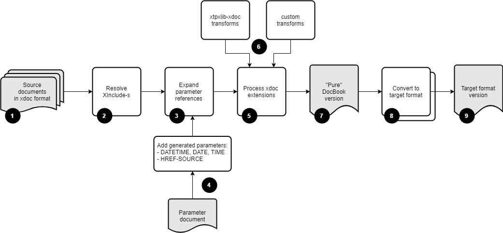

Have you ever struggled with producing technical documentation for your software, content model or anything else? Big chance that you have had
to deal with repeating constructs: Explaining XML elements and attributes, documenting functions, procedures and variables, etc. The same
constructs over and over again, usually with complex tables, little pieces of program listings or other things that are difficult to keep
consistent and maintain. The xtpxlib component xtpxlib-xdoc tries to alleviate
this problem
xtpxlib-xdoc's starting point is narrative documentation written in
DocBook 5.1. On top of this it adds a number of extensions. This source
format, DocBook + extensions, is called xdoc.
The xtpxlib-xdoc XProc (1.0) pipelines turns the xdoc format into "pure"
DocBook. From there it can be converted into PDF or HTML using standard DocBook technology. The xtpxlib-xdoc component itself also contains conversions into PDF (through XSL-FO) and HTML. These work out of
the box but, especially the PDF one, uses a layout that might not be what you want or need. But since the source is available you can tweak it to
your heart's desire.
xtpxlib-xdoc currently allows two types of extensions on top of DocBook:
Parameters, coming from some parameter source, are expanded. This useful for, for instance, status information, dates/times, standard
words and phrases, etc. This uses the parameter
mechanism as introduced in xtpxlib's common component.
The so-called xdoc transforms convert something, usually some piece of XML,
into DocBook and insert the result back in the main document. This is extremely useful for consistent and
repeating documentation generation.
Curious to see it in action. Want to know more? Checkout the Getting started section. This contains some ready-to-run examples that are drafted so you can use them as template for your own developments.
The following figure illustrates xtpxlib-xdoc's main
toolchain:

The xtpxlib-xdoc module uses a format called xdoc as its source format. The basis of xdoc is DocBook 5.1. On top of this xdoc adds extensions for parameter handling and code/markup/text
generation.
The first processing step in the toolchain performs basic XInclude processing. This means that you can build your document from smaller parts, for instance one document per chapter.
Another application of the XInclude processing is to get the data in for the xdoc transform processing in step 5.
The next step is to expand any parameter references in the source document. A parameter is a name/value pair. To expand its value in the
document use either ${name} or {$name} (both mean the same). Parameters are expanded both in text and in attribute
values.
Parameters come from two sources:
An (optional) parameter document. This document must use the format as handled by the parameter mechanism of xtpxlib's
common component. For instance:
<parameters>
<parameter name="my-parameter">
<value>Some value…</value>
</parameter>
</parameters>This format has several additional features, like filtering and grouping values. See the format's description for more information.
The toolchain adds a number of parameter of its own:
| Parameter | Description | Example value(s) |
|---|---|---|
DATETIME
|
The date and time the toolchain executed in YYYY-MM-DD hh:mm:ss format. |
2019-11-11 12:12:12
|
DATE
|
The date part of the DATETIME parameter. |
2019-11-11
|
TIME
|
The time part of the DATETIME parameter. |
12:12:12
|
HREF-SOURCE
|
The main source's filename. |
C:/my/path/sourcedoc.xml
/my/path/sourcedoc.xml
|
Next the so-called xdoc transforms are processed. A transform consists of an <xdoc:transform> element (the
namespace prefix xdoc: must be bound to http://www.xtpxlib.nl/ns/xdoc). An XSLT stylesheet or XProc (1.0) pipeline
is triggered that gets this <xdoc:transform> element (with all attributes and child elements) as input and results in the injection
of generated DocBook.
The transformations triggered by <xdoc:transform> can come from two sources:
Transformations that are built into the xtpxlib-xdoc component. These are generic
transformations for, for instance, documenting XML structures or generating code documentation. An overview of these can be found in
[TBD].
Your own transformations. Guidelines on how to write these can found in [TBD].
The result of the toolchain so-far is a document in "pure" DocBook 5.1.
From this you can transform to some target format.
The xtpxlib-xdoc component contains transformations to both PDF and HTML (see [TBD]).
These transformations can only handle a subset of the full DocBook standard. The result will be
rather specific for the xtpxlib-xdoc component and might not be directly usable for other
use-cases. To amend this you can copy-and-adapt these transformations or use some other DocBook conversion.
Finally, the result of all this is a document in the desired target format.
Information about the pipelines that implement this toolchain can be found in [TBD]